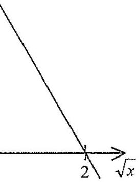

Multiple-choice · 1 mark
The graph in the figure shows the linear relation between \(y^3\) and \(\sqrt{x}\). If \(x=36\), then \(y=\)

The graph is a straight line in the "\(\sqrt{x}\) — \(y^3\)" plane.
The graph is a straight line of \(y^3\) against \(\sqrt{x}\). Read two clear points from the graph:
\[ (0,\;32) \quad\text{and}\quad (2,\;0) \]Compute the slope between these two points:
\[ m=\frac{0-32}{2-0}=\frac{-32}{2}=-16 \]Using the slope-intercept form of a straight line equation (i.e. \(Y=mX+c\)), with \(Y=y^3\) and \(X=\sqrt{x}\):
\[ y^3 = -16\sqrt{x} + 32 \]Use the relation found in part (a).
When \(x=36\), substitute into \(y^3 = -16\sqrt{x} + 32\):
\[ y^3 = -16\sqrt{36} + 32 \]Evaluate:
\[ y^3 = -16(6)+32 = -96+32 = -64 \]Take the cube root of both sides:
\[ y = \sqrt[3]{-64} = -4 \]